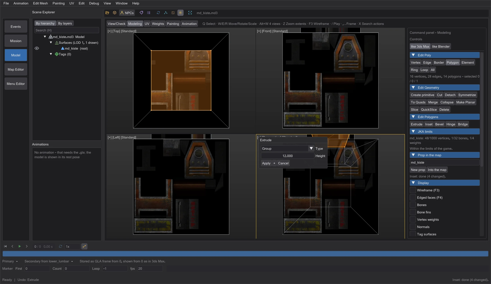
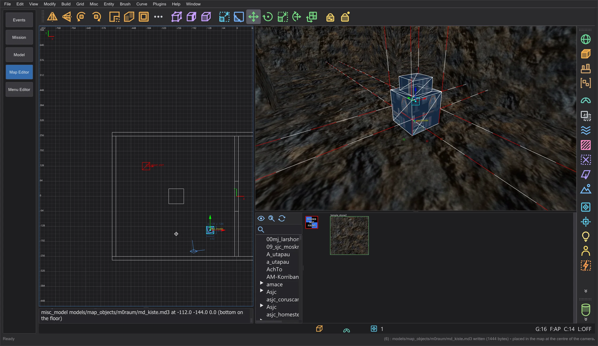

Model tab: modelling and props for the map
Build and change the surfaces of a .glm or .md3 with polygon tools like 3ds Max Editable Poly or Blender's Edit Mode - and put a prop such as a chair or a crate into the open map with one click.
The Modeling area#
Choose the area Modeling at the top of the model tab. The keys 1 to 5 (Blender mode 1 to 3) choose the level: Vertex, Edge, Border, Polygon and Element; each level keeps its own selection, as in 3ds Max. A click selects, Ctrl adds and Alt removes (Blender: Shift adds or removes), a drag selects everything it crosses. The view draws the polygons over the model - two triangles of the file that lie flat together are one quad, and To Quads joins them. W/E/R (Blender G/R/S) move, turn and scale the selection. The rollouts Edit Poly (Blender: Edit Mode) list the tools of the level; the same tools are in the menu Edit Mesh, in the right-click of the view and in the search (X, F3 in Blender mode), and every tooltip names its key (3ds Max mode: the default keys of Autodesk's table, e.g. Shift+E Extrude, Ctrl+Shift+B Bevel, Ctrl+Shift+C Chamfer, Alt+L/Alt+R Loop/Ring) or, for a tool without a key, its way through the menu. Without a model, New prop starts an empty .md3 with the texture currently chosen in the map editor.

Tools and the tool caddy#
A tool with values opens a small caddy in the top left of the view: the result shows at once and changes live while you drag a value; Apply (Enter) keeps it, + keeps it and runs the same tool again on the result, Cancel (Esc) puts everything back. Each tool is one undo step. Extrude lifts polygons (group, local normal or by polygon) or grows a strip from a border; Inset puts a smaller copy inside, every edge the same distance in; Bevel extrudes and scales the outline; Chamfer replaces edges by strips or cuts vertices off; Connect and Loop Cut add edges across polygons; Cut cuts by clicking edges and vertices one after another; Weld, Target Weld and Merge join vertices; Make Planar (Alt+M) moves the selection onto one plane (average normal, through its centre); Collapse (Ctrl+Alt+C) turns each connected group into one vertex; Slice cuts along a plane across an axis and QuickSlice (Ctrl+Shift+Q) along the line of two clicks in a view; Hinge swings polygons about one of their border edges; Bridge joins two borders or two polygons with a band of quads; Remove dissolves edges and vertices, Delete leaves a hole; Detach splits polygons off or into a new surface with its own texture; Symmetrize mirrors one half; Create primitive adds a box, plane, cylinder, sphere, cone, tube or torus with UVs. A tool that cannot work says why (for example: an edge would get a third polygon) and changes nothing. New vertices take the UVs of their polygon and blend the bone weights of their neighbours (at most four, summing to 1).
JKA limits and LODs#
The rollout JKA limits counts each surface as it would be written: fewer than 1000 vertices (SHADER_MAX_VERTEXES), at most 32 bones per surface and four weights per vertex, names and textures up to 63 characters (MAX_QPATH), and each tag exactly one triangle; a line turns orange as soon as a limit is crossed, and the caddy shows it during the preview. Too many vertices: split the surface with Detach. A .glm keeps its other LOD levels; Copy this LOD to all gives all levels the mesh of the drawn one.
A prop into the map with one click#
Give the prop a name in Prop in the map and click Into the map: JK Studio writes it as .md3 to models/map_objects/<map>/<name>.md3 in its own import folder (never the game folder), switches to the map tab and places it as misc_model on the floor in the middle of the camera; there you move, turn and scale it like any entity. The import folder is in the search path of the editor and of q3map2 and goes into the .pk3 of the map when you test or package it, so the prop is baked into the map with lightmaps like every misc_model. To change it, click the edit button beside the model key of the entity (or start from the model tab again) - after Ctrl+S the map editor reloads every copy and they keep their position, angles and scale.

Origin and licence#
The modelling tools are derived from WhiteoutLib and WhiteoutFlakes (BSD 3-Clause licence with AI-derived works notice, Copyright (c) 2026 Fernando Sahmkow). They work only with Jedi Academy data: the surfaces of .glm and .md3. The licence text is in licenses/, THIRD-PARTY.md and Help > About.